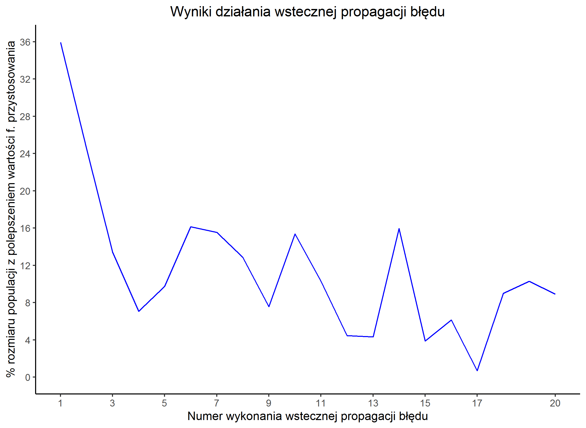
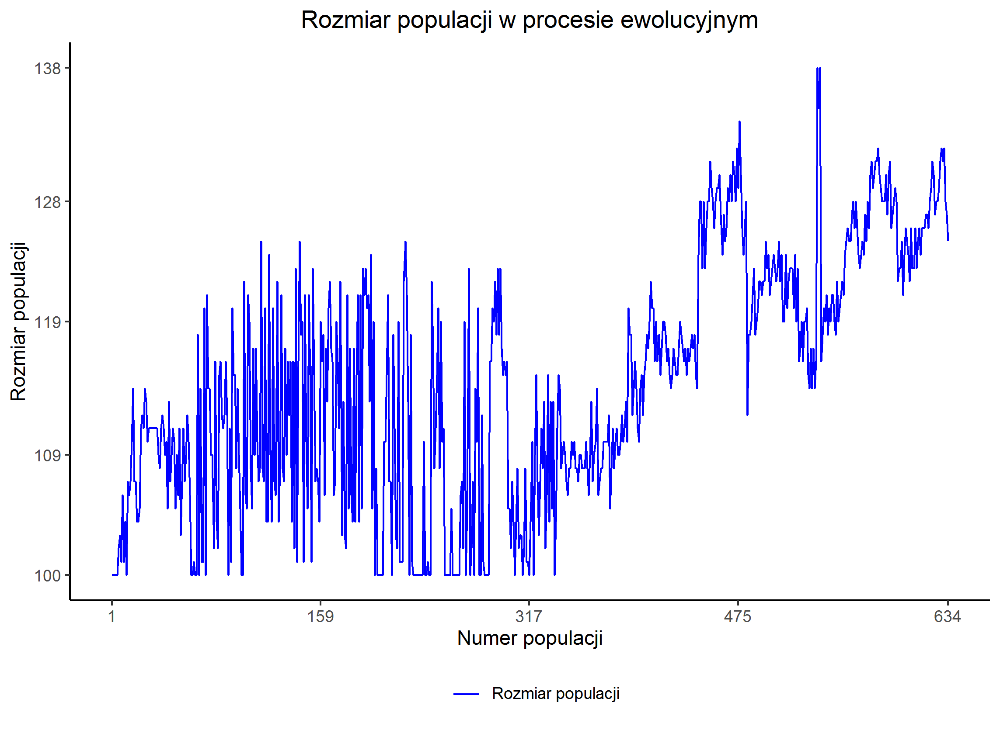
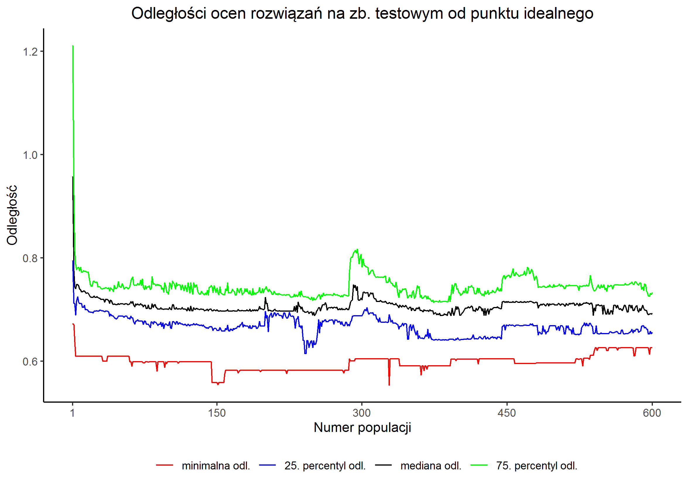

Eksperyment nr 5
Lending Club
Konfiguracja i wyniki eksperymentu
| Konfiguracja | konfiguracja | ||||||||||||
|---|---|---|---|---|---|---|---|---|---|---|---|---|---|
| Rozdział z rozprawy | 5.5 Maksymalizacja trafności, F1-score i pola pod krzywą ROC dla Lending Club | ||||||||||||
| Zbiór danych | Lending Club | ||||||||||||
| liczba obserwacji | zbiór uczący: 800 zbiór testowy: 200 | ||||||||||||
| Liczba epok | 600 | ||||||||||||
| Kryterium | Ocena wielokryterialna oparta o:
| ||||||||||||
| Ziarno generatora liczb losowych | skrypt przygotowujący dane: 2357 eksperyment: 3771 | ||||||||||||
| Wybrana kompromisowa sieć neuronowa | |||||||||||||
| Epoka uzyskania osobnika | 328 | ||||||||||||
| Wizualizacja / opis osobnika | wizualizacja genomu | ||||||||||||
| Oceny | Na zbiorze uczącym
Na zbiorze testowym
|
Rysunki


